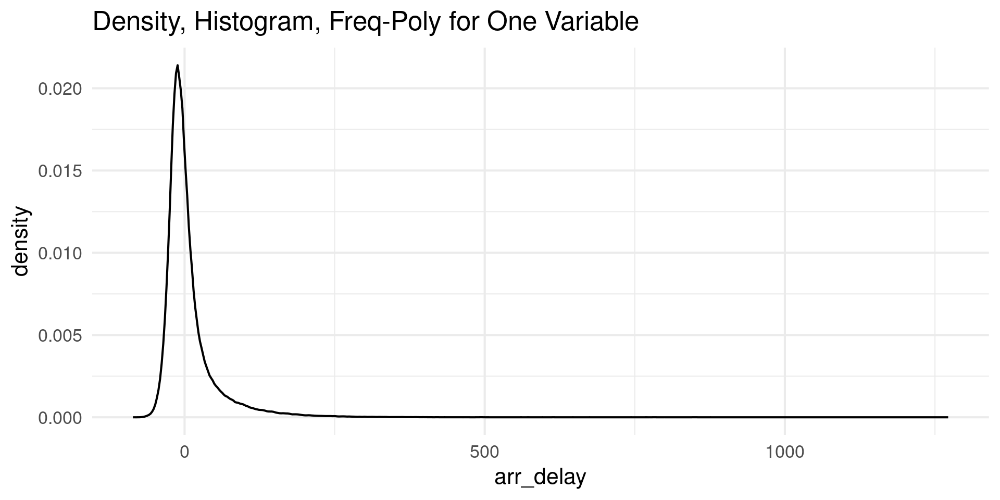
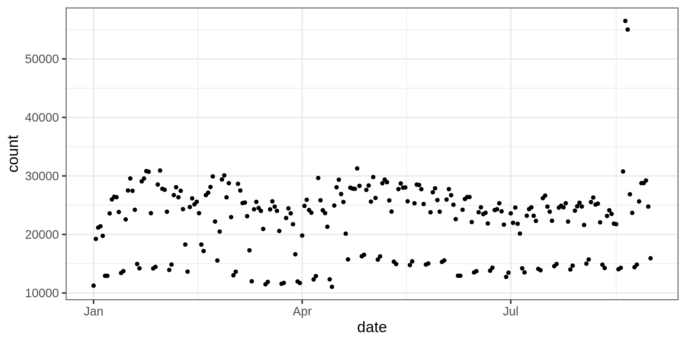

[1] -0.005341163Meetup 5: Data Transformation
George I. Hagstrom
2025-09-22
Week Summary
- Reading: Chapters 12, 13, 17 of R4DS
- Lab 4 on Data Transformations Due Sunday at Midnight
Data Transformation
- Process of creating new variables from current data
- Needed to prepare data for your analyses and questions
- Data transformations can lead to dramatically improved insight at little cost
- Types: Numbers, logical variables, dates, later strings and factors.
Case Study: Brain and Body Size
No Correlation?
- Compute the Pearson correlation between brain mass and body mass:
- We expect a strong relationship between brain mass and body mass
- Very difficult to believe that there is no relationship between brain mass and body mass.
Log Transformation
- Brain and Body size:
- Positive variables
- Range over orders of magnitude
- Result from multiplicative growth processes
- Suggests we try logarithms
Log Transformation: Different Story
Boolean/Logical Operations
- Logical Types:
TRUEandFALSE - NOT:
!TRUE = FALSE,!FALSE=TRUE - AND: only
TRUE & TRUE = TRUErestFALSE - OR: only
FALSE | FALSE = FALSErestTRUE
Comparison statements don’t work like in English:
Boolean Variables for Comparison
library(kableExtra)
nycflights13::flights |> select(year,month,day,arr_delay,carrier,origin,dest) |> head(10) |> kable()| year | month | day | arr_delay | carrier | origin | dest |
|---|---|---|---|---|---|---|
| 2013 | 1 | 1 | 11 | UA | EWR | IAH |
| 2013 | 1 | 1 | 20 | UA | LGA | IAH |
| 2013 | 1 | 1 | 33 | AA | JFK | MIA |
| 2013 | 1 | 1 | -18 | B6 | JFK | BQN |
| 2013 | 1 | 1 | -25 | DL | LGA | ATL |
| 2013 | 1 | 1 | 12 | UA | EWR | ORD |
| 2013 | 1 | 1 | 19 | B6 | EWR | FLL |
| 2013 | 1 | 1 | -14 | EV | LGA | IAD |
| 2013 | 1 | 1 | -8 | B6 | JFK | MCO |
| 2013 | 1 | 1 | 8 | AA | LGA | ORD |
Compare DL, UA, AA to others
- Create variable that is
TRUEwhen airline is in the group FALSEotherwise
flights = nycflights13::flights |>
mutate(IS_CARRIER_DL_UA_AA = carrier %in% c("DL","UA","AA"))
flights |>
group_by(IS_CARRIER_DL_UA_AA) |>
summarise(fraction_delayed = sum(arr_delay>30,na.rm=TRUE)/
sum(is.finite(arr_delay),na.rm=TRUE)) |>
print()# A tibble: 2 × 2
IS_CARRIER_DL_UA_AA fraction_delayed
<lgl> <dbl>
1 FALSE 0.180
2 TRUE 0.125Logical Subsetting
- Powerful way of manipulating Data Frames
if_elseandcase_when: vector output
Logical Subsetting using Base
- Can use
[]for other data types
# A tibble: 768 × 9
Pregnancies Glucose BloodPressure SkinThickness Insulin BMI
<dbl> <dbl> <dbl> <dbl> <dbl> <dbl>
1 6 148 72 35 0 33.6
2 1 85 66 29 0 26.6
3 8 183 64 0 0 23.3
4 1 89 66 23 94 28.1
5 0 137 40 35 168 43.1
6 5 116 74 0 0 25.6
7 3 78 50 32 88 31
8 10 115 0 0 0 35.3
9 2 197 70 45 543 30.5
10 8 125 96 0 0 0
# ℹ 758 more rows
# ℹ 3 more variables: DiabetesPedigreeFunction <dbl>, Age <dbl>, Outcome <dbl>Logical Subsetting using Base
- Can use
[]for other data types
# A tibble: 768 × 9
Pregnancies Glucose BloodPressure SkinThickness Insulin BMI
<dbl> <dbl> <dbl> <dbl> <dbl> <dbl>
1 6 148 72 35 NA 33.6
2 1 85 66 29 NA 26.6
3 8 183 64 NA NA 23.3
4 1 89 66 23 94 28.1
5 0 137 40 35 168 43.1
6 5 116 74 NA NA 25.6
7 3 78 50 32 88 31
8 10 115 NA NA NA 35.3
9 2 197 70 45 543 30.5
10 8 125 96 NA NA NA
# ℹ 758 more rows
# ℹ 3 more variables: DiabetesPedigreeFunction <dbl>, Age <dbl>, Outcome <dbl>Numerical Transformations
- Can implement any mathematical formula you can imagine
- Construct quantity of interest:
- Domain expertise
- As part of EDA
- Make a complicated relationship look simpler or even linear
- To boost other tools
- Some algorithms run better with standardized data
Defining Functions
- For complicated data transformations, define a function
- Functions make code easier to read
- Write function when code reused 3 times
Recycling Rules for Aggregates
- R “boosts” numbers/vectors so that calculations work
- Behavior is very different from other languages:
- Shorter vector/number is repeated to match the length of longer one
- Can be very unintuitive for when the vectors have lengths different from 1
Recycling Fails:
- Source of silent bugs
# A tibble: 5 × 3
year month flight
<int> <int> <int>
1 2013 1 1545
2 2013 1 1141
3 2013 1 461
4 2013 1 507
5 2013 1 79# A tibble: 5 × 3
year month flight
<int> <int> <int>
1 2013 1 1545
2 2013 1 1714
3 2013 1 1141
4 2013 1 725
5 2013 1 461logarithms
- \(\log(e^x) = x\)
- \(\log(x_1 \cdot x_2 \cdot \dots \cdot x_n) = \log(x_1) + \log(x_2) + \dots + \log(x_n)\)
- \(\log_{10}\) counts the digits of a number
\(\log\) in data science and stats
- Starting point when:
- Positive variables
- Multiplicative growth
- Wide Range
- Avoiding overflow/underflow in probability models
- In maximum likelihood focus on
loglikelihood
- In maximum likelihood focus on
- Special case of Tukey’s Ladder:
Two Approaches to Transformations:
- Domain Focused:
- Construct quantities of interest
- Transformation always inspired by knowledge of domain
- Power transformation to scale physical values
- Stats Focused:
- Transform with goal to make data more Normal, relations more linear
- Exemplified by Box-Cox Transformation
Window Functions: Values
- Perform transformations on “nearby” rows:
leadNext value(s)lagPrevious value(s)
[1] 2 3 4 5 6 7 8 9 10 NA [1] 4 5 6 7 8 9 10 NA NA NA [1] NA 1 2 3 4 5 6 7 8 9 [1] NA NA NA 1 2 3 4 5 6 7first()andlast()
Window Functions: Ranks
- Perform transformations on “nearby” rows:
percent_rank()rank()ntile()
Cumulative and Rolling Aggregates
cumsum,cummean- Rolling window (several libraries including
RcppRoll,TTR,slider)
Cumulative and Rolling Aggregates
cumsum,cummean- Rolling window (several libraries including
RcppRoll,TTR,slider)
Cumulative and Rolling Aggregates
- Rolling window TTR:

Cumulative and Rolling Aggregates

Caution About Group Boundaries
Data Science in Context Presentation
Rank
ranktransforms data from values to numerical rank:
[1] 1.80885413 -0.86717732 -2.59640371 0.09798562 0.90096916 0.13532205
[7] -0.37290373 -1.39668532 0.05124097 -0.58603415 [1] 10 3 1 7 9 8 5 2 6 4- Rank preserved by all monotone transformations
Rank and Correlation Trick
- Spearman Correlation is correlation between ranks of two variables
rank_corr corr
1 0.7162994 -0.005341163- Correlation Trick: Look for Nonlinear Transformations when Rank-Correlation is much higher than Pearson Correlation
Rank Correlation Graphical Version
What didn’t we cover?
logit,probit,ReLU: Data transformations that go between a finite interval and the real line- Enormous number of different ranking functions available in R
- Linear Algebra Based Methods, PCA, dimensionality reduction
- Tools from the sciences: Fourier, Wavelets, etc
Meetup Reflection/One Minute Paper
Please fill out the following google form after the meeting or watching the video: